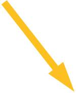

VARFÖR STIGER TEMPERATUREN?
1. Strålningen från solen når ytan och värmer upp luften.
2. En del av strålningen sänds tillbaka som värmestrålning.
3. Gaser i atmosfären släpper igenom det mesta av värmestrålningen, men en del reflekteras tillbaka till jorden.
4. När människan släpper ut växthusgaser som till exempel koldioxid och metan i atmosfären så förstärks återstrålningen av värme till jorden och temperaturen stiger.
